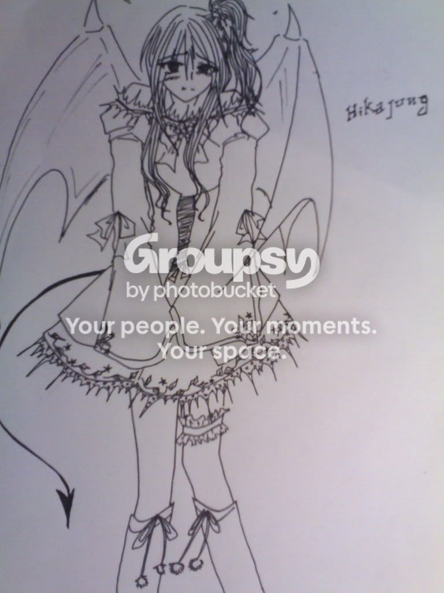
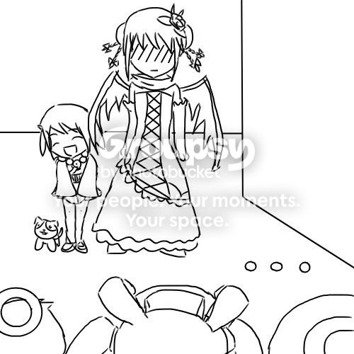

หน้า 4 จากทั้งหมด 6

โพสต์แล้ว:
ศุกร์ 07 มี.ค. 2008 8:08 pmโดย ECO
โฮะๆๆ ออกแนวฮา ฮิกะจังโดนเข้าใจผิดเป็นผู้หญิงไปแระ -0-
เด๋ววาดรูปมาให้ดูนะงิงิ
ฮิกะจังจ้า
โพสต์แล้ว:
ศุกร์ 07 มี.ค. 2008 8:39 pmโดย ECO
รูปฮิกะจังแต่ง ญ จ้า

(ชิ น่ารักจริงๆแฮะ)
โพสต์แล้ว:
ศุกร์ 07 มี.ค. 2008 9:33 pmโดย ECO
น่าร้ากกกกกกกกกก - กกก !! แง่วเหมือนผู้หญิงมากๆๆๆๆๆ >[]< เมี้ยว
โพสต์แล้ว:
ศุกร์ 07 มี.ค. 2008 9:40 pmโดย ECO
นี่ของเค้า

ของ ยูจัง วาดได้น่ารักมั่กๆ แต่มีผิดคือ.... ฮิกะยังไงก้คือผู้ชาย แต่มีหน้าอกได้ไง -0- เค้าดูจากผมที่มีนูนออกมาส่วนนึง ไม่ก้ยูจังตั้งใจวาดให้ ฮิกะเอาทิชชู่ยัด เหอๆๆ
แล้วก้ผู้ชายขนตาไม่ยาวนะ เว้นแต่เค้าจาใช้ Eye Shadow หรือ ขนตาปลอม เหอๆ
ส่วนของแอนไม่ให้เห็นหน้า เป็นหน้าแดงทั้งหน้า
โพสต์แล้ว:
ศุกร์ 07 มี.ค. 2008 9:46 pmโดย ECO
อ่านะ มันมิใช่หน้าอกน้าแอนจัง มันเป็นเหมือนเครื่องประดับบนชุด แล้วก้อโดนแอนนาจับแต่งหน้าด้วยแหละ มันเรยยยออกมาสภาพนั้น แหะๆ
โฆษณาจ้า!!!
โพสต์แล้ว:
เสาร์ 08 มี.ค. 2008 9:51 amโดย ECO
สำหรับผู้ที่รักการวาด การแต่ง
เชิญเลยจ้า
http://rankun.freeforums.org/index.php
นี่เป็นบอร์ดของแรนคุงจ้า
เข้ามาแปะรูปวาดกันได้น้า
(โฆษณาให้ซะเรยยยย อิอิ)
ตอน6คับป๋ม
โพสต์แล้ว:
เสาร์ 08 มี.ค. 2008 1:19 pmโดย ECO
Fic Eco : Once in a life time [ฟิค Eco เรื่องแรกของเรานะ]
Part 4 : ความสามารถของฮิตากะ
ทางฮิตากะ
“งืม...หนีออกมาก็ง่ายๆเลยนะเนี่ย”ฮิตากะ ซึ่งตอนนี้เดินอยู่ข้างนอกเรียบร้อยกำลังจะกลับฐาน เพราะอะไรน่ะเหรอ เพราะว่า ฮิตากะเป็นผู้ชาย แรงจึงมีมากกว่าผู้หญิงที่เคยถูกจับมา และหนีออกมาทางหลังคา แล้วกระโดดลงมาอีกด้าน
สรุป นี่คือความสามารถอีกอย่างของฮิตากะ ที่มีควรประมาท
ปัง!!
“ไฮ...กลับมาแล้ว”ฮิตากะเปิดประตูเข้ามายิ้มอย่างร่าเริง
“อะ..ฮิกะจัง!!!”มาโกะร้องอย่างตกใจ
“โทษทีนะพอดีว่า หาทางหนีออกมานานไปนิด แหะๆ”ฮิตากะเดินเข้ามานั่งพร้อมวางถุงของลง
“เปลี่ยนชุดก่อนนะ”ฮิตากะเดินฮัมเพลงเข้าห้องไป
“เอ่อ...ก็ดีแล้วน่ะนะที่กลับมาได้เอง”อะมิธิสต์พูดอย่างโล่งใจ
“อืม...นี่อะมิธิสต์ ชั้นใช้สมองมากง่วงนอนจัง”ราฟาเอลพูดอ้อนๆ
“หืม? ก็ไปนอนในห้องนายสิ”อะมิธิสต์พูดอย่างไร้เยื่อใย
“แหม...เป็นหมอนให้หน่อยไม่ได้เหรอ?...นะๆๆ”ราฟาเอลเดินไปนั่งข้างๆตรงโซฟาแล้วอ้อน
“กะ..ก็ได้ แปบเดียวนะ ////////”อะมิธิสต์ตอบรับอายๆ
“อิอิ...จ้า”
“หยก...”
“หืม...อะไรเหรอ อันเซอร์”
“ชั้นหิว...อยากกินสตูเนื้อจังเลยยย~~ทำให้หน่อยสิ”อันเซอร์ทำหน้ายิ้มๆ
“อา...ได้สิ”หยกเดินเข้าครัวไป
“อ๊ะ...ชั้นช่วยนะ”แล้วอันเซอร์ก็วิ่งตามไปอีกคน
“ชิ คนมีคู่ไม่รู้หรอก”มาโกะ
“นั่นสิ คนมีคู่ไม่รู้อะไรเลย”แพร
(อิจฉาเฟ้ยยยย – ทั้ง2คน)
“แล้วเฟนซ์,วี แล้วก้อแอนนาล่ะ”วินดี้
“เฟนซ์กับวีอยู่ในห้องน่ะ ส่วนแอนนาไปช่วยฮิกะจังเปลี่ยนชุด”มาโกะ
“ไปทำอะไรกันในห้องน้า~~”แพร
ในห้องของเฟนซ์
เฟนซ์ถอดแว่นวางไว้บนโต๊ะข้างเตียง
“ว้าวววว...หนังสือเต็มไปหมดเลย”
“วี ชื่อเต็มของเธอน่ะ อะไรเหรอ?”เฟนซ์ถามคนที่เดินดูหนังสือที่ชั้นอย่างตื่นเต้น
“เอ๋...มิคาเอลล่า โรเวน่า จ้ะแล้วนายล่ะ”วีถามกลับ
“เฟเนซัส......พรินสตัล เฟเนซัส น่ะ”เฟนซ์ตอบ ยังคงใบหน้านิ่งไว้เหมือนเดิม
“อืม...นี่ ทำไมถึงชอบอ่านหนังสือนักล่ะ”วีหันไปถามคนที่นั่งมองตัวเองอยู่
“ก็ มันไม่มีอะไรให้ทำนี่ แล้วเธอจะให้ชั้นทำอะไรล่ะ”เฟนซ์ยังคงจ้องมองคนตรงหน้าอยู่
“ว่างว่างั้น - * - นี่ อย่าจ้องชั้นขนาดนั้นสิ ชั้นก็อายเป็นนะ”วีพูดเขินๆ
“ก็ ชอบนี่นา ก็เธอน่ารักเองนี่”เฟนซ์พูด แต่วีคิดว่าบรรยากาศการพูดมันแปลกตั้งแต่ที่เข้ามาแล้วนา หรือคิดไปเองหว่า
“เอ่อ //// ฮะๆ นายพูดอย่างนี้เป็นด้วยเหรอ”วีหันไปหัวเราะฝืดๆ
“ไม่หรอก...แล้วแต่คนที่พูดด้วยน่ะ”
“ฮะฮะ..กะ ก็แค่น่ารักน่ะ ไม่มีใครมารักหรอก”วีเริ่มคิดว่าแปลกมากขึ้นทุกทีๆ
“ก็เพราะงั้น ถึงได้รักไงเล่า //////// ”เฟนซ์พูดแต่หน้าแดงไปหมดแล้ว
“อะ...เอ่อ”วีเริ่มรู้สึกวางตัวไม่ถูกซะแล้ว จึงลงไปนั่งบนเตียงข้างๆเฟนซ์
“ก็ อย่างที่พูดแหละนะ...เอ่อ ว่าไงล่ะ /////”เฟนซ์มองหน้าวีอย่างหวาดๆ
ปุบ!!
“อื้ม!!”วีเอาหน้าซบลงที่ไหล่ของเฟนซ์
“อะ...เอ๋ อื้ม....หมายความว่า...”เฟนซ์มองร่างข้างๆงงๆ
“ก็ ชั้นก็ชอบนายไง อีตาบ้า /////”วียังคงไม่เงยหน้า เพราะรู้ตัวว่าหน้าต้องแดงมากแน่ๆ
หมับ!!!
“อ๊ะ...จะทำอะไรน่ะอึดอัดน่า”วีบอกอายๆ เมื่อถูกกอด
“เฮ้อ...โล่งอกไปที นึกว่าจะโดนปฏิเสธซะแล้ว”เฟนซ์ยังคงไม่ปล่อย
“บ้า...นี่ปล่อยก่อนเถอะนะ หิวข้าวแล้ว”วีบอกเสียงแผ่ว
“อืม...ออกไปกินข้าวกัน”
ปัง!!
“อ้าว ทั้ง2คน กำลังจะไปเรียกพอดี เป็นอะไรไปน่ะหน้าแดงทั้งคู่เลย”แพร ออกอาการสงสัย มันเข้าไปทำอะไรกัน(วะ)
“เอ่อ...เปล่าร้อนน่ะ”วีตอบไปแบบมั่วๆ
อ๋อเหรอ คิดว่าโง่กันรึไงเนี่ย ชิ ช่างเหอะ – ทุกคน
หลังจากกินข้าวเสร็จ
“นี่ๆ วี ทำไมตอนออกจากห้องมาหน้าแดงงั้นล่ะ เฟนซ์ทำอะไรเหรอเจ้าคะ”แพรถามอย่างอยากรู้
“เอ่อ...เค้าเอ่อ //////”
“ให้ทายนะ เค้าสารภาพกับเธอใช่มั้ย”มาโกะ เดา
“อื้มๆ //////”วีพยักหน้ารัวๆ
“แล้วหลังจากนั้นล่ะ”วินดี้ถามต่อ
“กะ...ก็ เค้าก็ กอดน่ะ”วีตอบอายๆ
“หา? กอดเลยเหรอ? ไม่นึกว่าเฟนซ์จะกล้านะเนี่ย”แพรทำหน้าอึ้ง
“แล้วไงต่อ”อะมิธิสต์ถามต่อ
“ก็ไม่มีอะไร”วีตอบ
“นี่เธออ่ะ ไม่ต้องไปถามวีเลยอะมิธิสต์ กับราฟาเอลล่ะเป็นไง”มาโกะ ยิ้มมีเลศนัย
“เอ่อ...ก็ /////”
“วี...”เฟนซ์เดินออกจากห้องนอนมาเรียกวี
“มะ...มีอะไรเหรอ?”วีตอบรับ
“มานี่หน่อยสิ”เฟนซ์กวักมือเรียก
“อืม....เดี๋ยวชั้นมานะ”วีบอกทุกคนก่อนจะเดินไปหาเฟนซ์
“มีอะไรเหรอเฟนซ์”วีเดินเข้าไปหา
“อืม ก็ไม่มีอะไรหรอกแค่เอ่อ...นี่อ่ะ ฮิตากะฝากมาคืน”เฟนซ์ส่งที่ติดผมคืนให้วี
“อืม ขอบคุณนะ”
“เดี๋ยว....ราตรีสวัสดิ์นะ”เฟนซ์ดึงตัววีเข้ามาแล้วจูบเบาๆที่หน้าผากก่อนจะเดินเข้าห้องไป
“อะ ////////”วีได้แต่ยืนหน้าแดงอยู่อย่างนั้น
..................
....................................
“มาแล้ววววว */////*”วีเดินเข้ามานั่งกับกลุ่มผู้หญิงอีกครั้ง
“แหม ทำอะไรไม่อายเลยนะ เมื่อกี้เห็นนะ”มาโกะ
“นี่ก้ออีกคน ทำอะไรไม่เกรงใจชาวบ้าน ถามจริงเธอ2คนคบกันแล้วเหรอ”แพรหันไปถามราฟาเอล
ที่มานั่งอ้อนอะมิธิสต์ตั้งแต่เมื่อไหร่ก้อไม่รู้
“อืม...ก็แหงสิ”ราฟาเอลตอบ หน้าตายมากกกก
“หา!!!...ตั้งแต่เมื่อไหร่”ทุกคนพูดอย่างตกใจ
“ก็ ตั้งแต่ตอนที่แอนจังจับฮิตากะใส่ชุดผู้หญิงอ่ะ”ราฟาเอลคิดๆๆ แล้วตอบหน้าตาย ส่วนอะมิธิสต์หน้าแดงแป๊ดดดดด ///////
“ก็ก่อนคู่วีอีกอ่ะดิ”วินดี้หันไปถามอะมิธิสต์
“อื้มมม ////”อะมิธิสต์พยักหน้า2-3ครั้ง
“เฮ้ออออ คนมีคู่ไม่รู้หรอก ชิ”วินดี้ – มาโกะ – แพร
“แล้วหยก แอนนา ฮิตากะ แล้วก้ออันเซอร์ล่ะ”วีมองไปรอบๆแล้วถาม
“......................”
“......................”
(มันหายไปเป็นคู่ๆ อย่างนี้มันน่าสงสัยอยู่นา =A= - ความคิดทุกคนในที่นั้น)
2 B Con
วันแรกที่ลงตอนกลางวัน อิอิ เรียบร้อยไปอย่างเป็นทางการ2คู่ ครั้งหน้ามาดูกันว่า สี่คนที่เหลือหายไปไหน ครั้งหน้ามีตอนพิเศษด้วยน้า
บายยยยยยยงับบบบบ
Re: โฆษณาจ้า!!!
โพสต์แล้ว:
เสาร์ 08 มี.ค. 2008 2:30 pmโดย ECO
ยูคุงงงง - งง !! โฆษณาซะงั้น จะมีใครสนมั้ยนั้น
โพสต์แล้ว:
เสาร์ 08 มี.ค. 2008 3:14 pmโดย ECO
-0- แอนนาหายไปไหนเนี่ย -0- ทามไมถึงหายไปกานเป็นคู่ๆ
โพสต์แล้ว:
จันทร์ 10 มี.ค. 2008 9:16 pmโดย ECO
ขุดมันขึ้นมา ยูคุงอยู่ม้ายย - ยย !
โพสต์แล้ว:
พุธ 12 มี.ค. 2008 11:40 amโดย ECO
.... ตอนที่7เมื่อไหร่จามาเมี้ยว
โพสต์แล้ว:
พุธ 12 มี.ค. 2008 9:30 pmโดย ECO
เหอๆ นั่งอ่านยังต้องยิ้มเลย หนุกมาก
เมื่อไหร่จะได้ไปสู้กันซะที
อยากบู๊แล้วอ่ะ
ตอน7คร๊าบบบป๋ม
โพสต์แล้ว:
พฤหัสฯ. 13 มี.ค. 2008 8:20 pmโดย ECO
Fic Eco : Once in a life time [ฟิค Eco เรื่องแรกของเรานะ]
Part 5 : ยมทูต
“นี่ๆ เป็นไงมั่ง ใช้ได้ป่าวอ่ะ”หยกถามอย่างตื่นเต้น
“อืมมมมม...จืดไปนิดนึงอ่ะ เพิ่มรสอีกนิดนึงแล้วกัน”อันเซอร์ชิมก่อนทำหน้าแปลกๆ
“โอเค งั้นรออีกแปบนึง”หยกวิ่งไปจัดการอาหารในหม้อ
..........
.....................
“นี่ เธอน่ะ”
“หา? มีอะไรเหรอ”หยกหันมาถามงงๆ
“ทำไม ถึงต้องทำท่าทางเหมือนกลัวชั้นด้วยล่ะ”
“กะ...ก็นายน่ะ ชอบทำท่าทางแปลกๆนี่”หยกตอบเสียงหงอยๆ
“หา?...จริงเหรอ ชั้นแปลกเหรอ”หยกพยักหน้า ความจริงอยากจะบอกว่ามากก็เหอะนะ
“อืม”
“อ่าแหะๆ...เอาเหอะ แต่เรื่องที่ชั้นบอกว่าชอบเธอน่ะ พูดจริงนะ”ยิ้มมมมมมมม
“อา ค่ะ ///////////”
ฮิตากะ + แอนนา
“อะ...อื้ม ฮิกะจัง อ๊า ////”
“อะไร เจ็บเหรอแอนจัง...ทนหน่อยนะ”
“อะ มะ ไม่ไหวแล้ว ฮิกะจัง จะ...เจ็บ อ๊ะ”
//โป๊ก!!! โป๊ก!!!//
“นี่ พวกนาย แค่ทำแผลแค่เนี้ย ส่งเสียงซะ”มาโกะใช้สลิปเปอร์รูปกระต่ายสีชมพู ตบไปเต็มๆที่หัวทั้ง2คน
ก็ดูดิ กะอีแค่ แอนจังหกล้มเข่าถลอก แล้วฮิตากะทำแผลให้ แต่ดูพวกมัน ส่งเสียงซะเวอร์ได้โล่เชียวล่ะ รู้ป่ะว่าคนอื่นๆเค้าเข้าใจผิดน่ะ =__=;; (คนอ่านตกใจแหง)
อ่านะ
“นี่ๆๆ ราฟ ถามหน่อยสิ”อะมิธิสต์สะกิดราฟาเอลที่นั่งเอ๋ออยู่
“หา??? อะไรเหรอ”ราฟาเอลฟันมาลนๆ
“เอ่อ...คือ...ถ้าต้องสู้ขึ้นมาจริงๆ พวกเราจะ”
“หึ อย่ากังวลเลย เพราะไม่ว่ายังไงนะ ชั้น ก็จะไม่ยอมให้ใครพาเธอไปหรอก ตอนนี้ เธอเป็นของ
ชั้น”ราฟาเอลยิ้มบางๆ แต่ก็ทำเอาอะมิธิสต์หน้าแดงไปเลย
“บ้าน่า /////////”
“เฮ้ๆๆ พวกนายอย่ามานั่งจีบกัน ประชุมด่วน แพรไปตามไอ้คุณชายเฟนซ์มาซิ ตอนนี้มันยังไม่หลับหรอก”มาโกะเรียกรวมพลซึ่งทุกคนก็เดินมาหา
“รับทราบ”แพร วิ่งฉิวเข้าห้องเฟนซ์ หลังจากนั้นก็ตามด้วยเสียงนี้
เฮ้ย!!!! เหวออออออออ
แล้วสิ่งที่ปรากฏคือ ภาพของแพรซึ่งลงทุนลากตัวเฟนซ์ออกมาจากห้องนอน ทั้งที่แปรงสีฟันคามือ
“อะไรเนี่ย ชั้นแปรงฟันก่อนไม่ได้เหรอ!!”เฟนซ์โวยวาย (ให้ตายสิ มองก้อไม่เห็นแว่นก้อหยิบไม่ทันกำลังจาบีบยาสีฟันพอดีเจ๊แกเล่นลากมาซะ - เฟนซ์คุง)
เงียบบบบบบบบบบ
ทุกคนจ้องมองไปที่เฟนซ์แบบอึ้งๆ
“หือ? อะไรของพวกนายกัน มองชั้นทำไม”สายตาตาล่ะคนทิ่มแทงสุดๆ ชั้นทำอารายผิด
“ฟะ...เฟนซ์ นายทำอะไรกับผมมาง่ะ”ราฟาเอลชี้
“นั่นดิ ทำไมมันสีไม่เหมือนเดิม”มาโกะก้อยังงง
“เอ๋...อ๋อ ทำให้มันกลับเป็นสีเดิมง่ะ แปลกเหรอ”เฟนซ์ตอบงงๆ อารายของมันฟะ
“หา...นายไม่ได้ผมสีทองอยู่แล้วเหรอ”อันเซอร์ทำเสียงประหลาด
“อ๋อ อื้ม ชั้นผมสีเทาน่ะ”
ทุกคนเงียบบบบบบบบบ
สรุป – คบกันมา2ปี เพิ่งรู้ นี่นายจะเป็นปริศนาไปถึงหนายยยยยยยยย - -*
“เฮ้อ เอาล่ะนั่งๆ นายมองเห็นใช่มั้ยเฟนซ์?”มาโกะดึงทุกคนเข้าเรื่อง
“อืม ก็ไม่ค่อยชัดหรอก แต่ไม่เป็นไร”
“อืม นี่ ในฐานะที่ชั้นเป็นหัวหน้ากลุ่มนะ ชั้นว่าเรื่องที่หลวงพ่อพูดเริ่มเป็นจริงแล้วล่ะ จากการที่ฮิตากะถูกจับตัวไป”มาโกะพูดน้ำเสียงจริงจัง
“ชั้นรู้มาว่า พวกมันอยากได้พลังนั่นไปเพื่อ ครอบครองทั้ง3เผ่าน่ะ”ฮิตากะเริ่มเข้าสู่โหมดจริงจังซึ่งหาได้ยาก (หยาบคาย - ฮิตากะ)
“งั้นสาเหตุ ที่พวกมันจับผิดตัว ก็มาจากที่ติดผมของยัยกระรอกใช่มั้ย”ราฟาเอลคิดๆแล้วเดามา
“ใช่ เพราะนั่นเป็นเครื่องพิสูจน์อย่างดีเลยล่ะ มันมีชิ้นเดียวล่ะ”มาโกะพูดจากที่รู้
“แต่ชั้นว่าพอมันรู้ว่าฮิตากะหนีมา มันก็ต้องตามมาแน่เจ้าค่ะ”แอนนาพูดเสริม
วิ้งงงงงงง-----งงงงงง
“อึก...เจ็บ”วี
“โอ๊ยยยย....”อะมิธิสต์
“มะ....มาแล้ว ทุกคนหนีไป!!!!!”วีกับอะมิธิสต์พูดพร้อมกัน
“เอ๊ะ”สิ้นเสียงทั้งคู่ ทุกคนก็ถูกวาร์ปหายไปที่ไหนซักแห่ง
เพล้งงงง!!!
“ว้ายยยยย”อะมิธิสต์ร้อง
“โฮ่...ที่แท้ ก็อยู่นี่เองสินะ สายัณสวัสดิ์ท่านผู้รู้”ชายในชุดสูทสีดำ โค้งตัวให้นิดนึง แต่รอยยิ้มนั้นก็ อันตราย
“เจ้าเป็นใคร”วีกอดอะมิธิสต์เอาไว้ก่อนจะถามชายผู้นั้น
“แหม ทำเสียงแข็งจังนะสาวน้อย ไม่น่ารักเลยนะ หึหึ”ชายคนนั้นยังคงยิ้ม
“ข้าถามว่าเจ้าเป็นใคร”วีเสียงดังขึ้นเพื่อกันการนอกเรื่อง
“ไม่รู้สินะ หลายร้อยปีข้าอยู่มาในนามของ ยมทูต”ทันใดนั้นชายผู้นั้นก็ตวัดเคียวอันใหญ่มาจ่อที่คอของทั้งคู่
“หึหึ ว้า เสียดายจัง ข้าไม่น่ากลัวหรือ เอาล่ะ ที่ข้ามาที่นี่เพื่อ กำจัดเจ้า ท่านผู้รู้”
ทางทุกคนที่ถูกวาร์ปมา
“ทะ..ที่นี่ที่ไหน”หยกมองซ้ายขวา เห็นแต่เพียงทุ่งหญ้า และมีชาวบ้านอยู่เต็มไปหมด
“ชั้นว่าเราต้องหาทางออกจากที่นี่แล้วล่ะ”มาโกะมองซ้ายขวา
สายตาของราฟาเอลสะดุดไปที่หญิงสาวเผ่าโดมิเนี่ยนและไททาเนีย2คนซึ่งนั่งอยู่ข้างสระน้ำ ดูยังไงก็ไม่เหมือนชาวบ้านธรรมดา เพราะดูจากการแต่งตัว ก็ไม่ใช่ชาวบ้านแล้ว
“นี่ทุกคน ดูนั่น”ราฟาเอลชี้ให้ทุกคนดู
“เข้าไปถามนะ”อันเซอร์พูด แล้วทุกคนก็เดินเข้าไป
“ขอโทษนะคะ”วินดี้เรียกหญิงสองคนนั้น
ซึ่งทั้ง2ก็หันมายิ้มให้อย่างใจดี
“มีอะไรเหรอจ๊ะ”หญิงสาวเผ่าไททาเนียยิ้มบางๆ
“คือ พวกเราถูกวาร์ปมาน่ะค่ะไม่ทราบว่าที่นี่คือ”แพรถามต่อ
“อ้าว แหม ใครกันนะที่พาพวกเธอมา บอกนามของเขาได้ไหม บางทีข้าอาจช่วยพวกเจ้าได้”หญิงสาวเผ่าโดมิเนี่ยนถาม
“เอ่อ 2คนค่ะ อาคิระ ยูริ กับ อะมิธิสต์”หยกพูด
“ยูริจังเหรอ พวกเธอเจอยูริจังเหรอ เค้าเป็นยังไงบ้าง!!!!”อยู่ๆหญิงสาวเผ่าโดมิเนี่ยนก้อลุกพรวดขึ้นมาทันที พร้อมท่าทีร้อนรน
“โยรุซัง”หญิงสาวเผ่าไททาเนีย
2 B Con
มาลงช้ามากมายยยยยย รู้ตัวนะงับ พอดีติด ไพรเวทคอสเพลย์ เยอะแยะเลยงับ ขออภัยทุกคนด้วยยยยยน้า ป๋มผิดไปแล้ววววววววว
By…ยูคุงงับ
ป.ล แรนคุง งับ คราวหลังป๋มจาตามไปแต่งคอสด้วยนะงับ ขอให้โชคดีกะรุ่นพี่เน้อออออ อิอิ
โพสต์แล้ว:
พฤหัสฯ. 13 มี.ค. 2008 8:47 pmโดย ECO
โผล่มาตอนแรกตกใจหมด -0- เหอๆๆ
ป.ล. ยูจังลดขนาดรูปหน่อยจิ ลดเปนไหม ลดไม่เปงเด๋วลดให้ ตอบมาด้วยน้า
โพสต์แล้ว:
พฤหัสฯ. 13 มี.ค. 2008 8:54 pmโดย ECO
จ้า เด๋วลดลง คิดนานแล้วแหละ
แต่ไม่ว่างเรยง่ะ